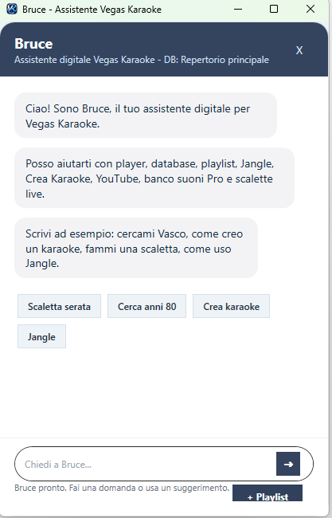
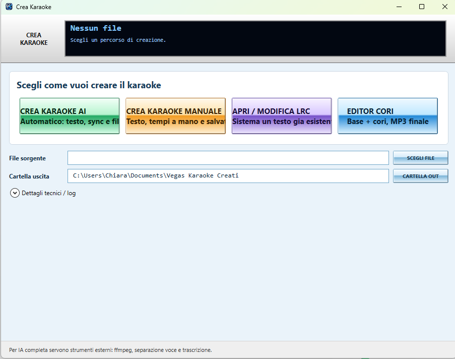
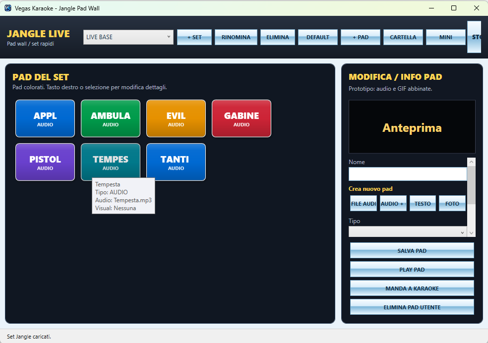
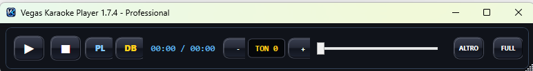
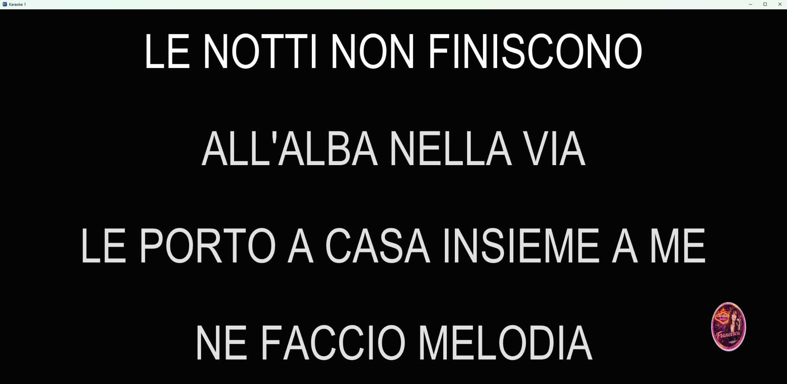
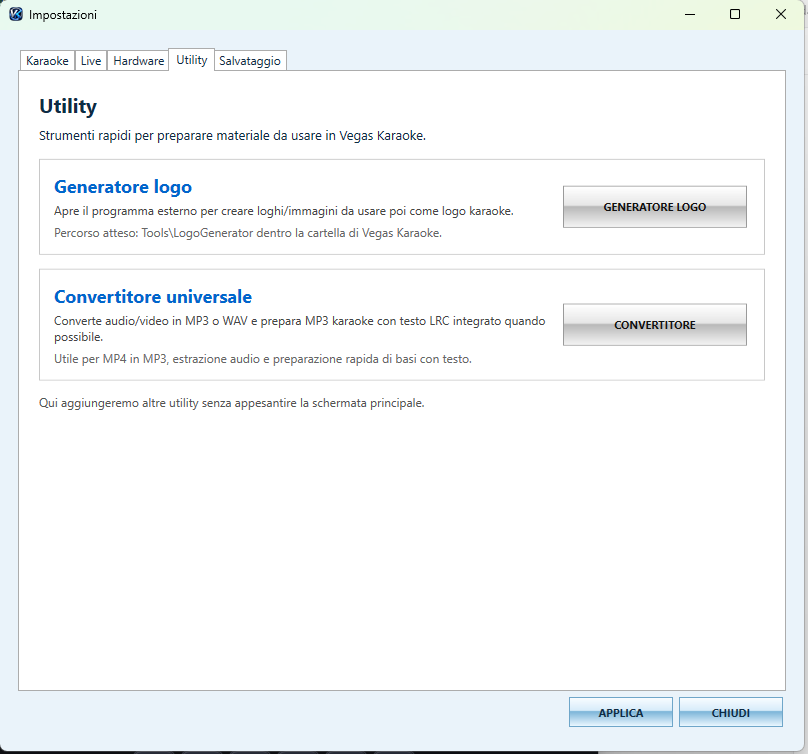
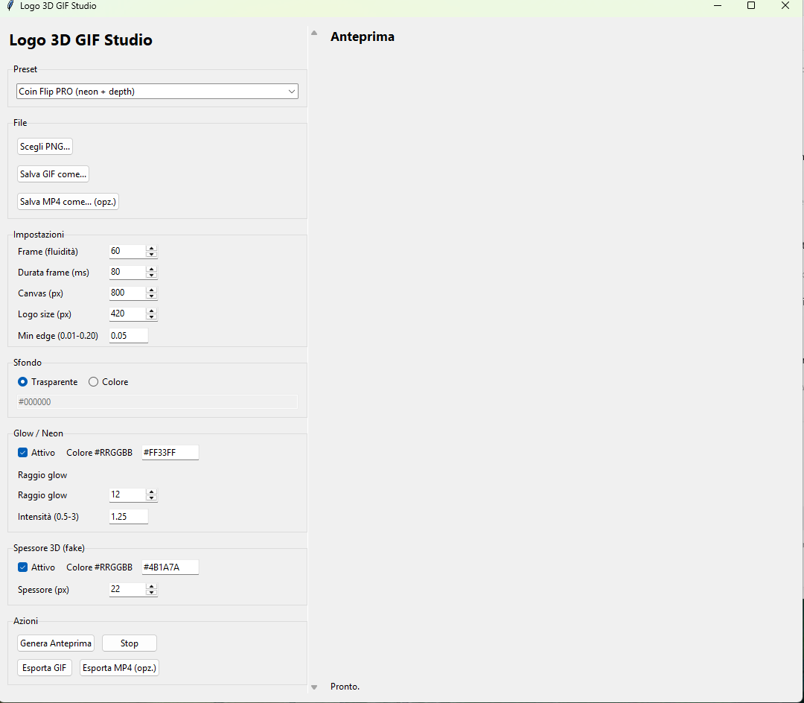
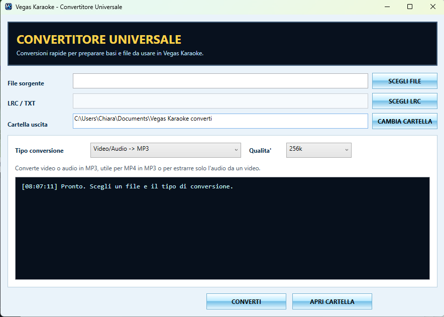

Screenshot 2.0.0
Schermate Vegas Karaoke Player
Le principali finestre della versione 2.3.1: Bruce IA, Crea Karaoke, Jangle, database, mini player e schermo karaoke.

Bruce Assistente IA
Assistente digitale integrato per funzioni, database e scalette live.

Crea Karaoke AI 2.0.0
Nuova schermata con AI, manuale, LRC ed Editor Cori.

Jangle Pad Wall 2.0.0
Pad colorati, tooltip, set e STOP TUTTO.
Database repertorio
Archivio basi karaoke con ricerca e filtri.

Mini Player
Barra compatta per lavorare in live.

Schermo karaoke
Testo grande su monitor esterno o proiettore.

Utility
Generatore logo e convertitore universale.

Logo 3D GIF Studio
Creazione loghi animati GIF e MP4.

Convertitore Universale
Conversione audio/video e preparazione MP3/LRC.